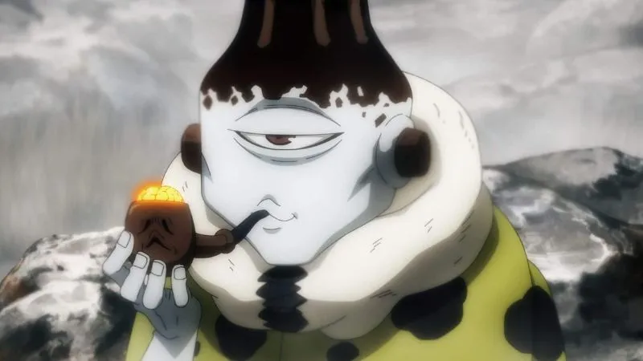

Aventureiros acharam um ser de outro mundo, estavam em choque não conseguiam se mexer e nem falar porem esse ser começou a caminhar para perto de um dos integrantes do grupo e disse as seguintes palavras.
ouçam com atenção meros mortais, estavamos vagando pelos mundos embusca de sobreviver e achamos o seu mundo, vamos tomar a energia amaldiçoada para agente e não a nada que voces possam fazer para nos impedir.
voltar proximo Especial